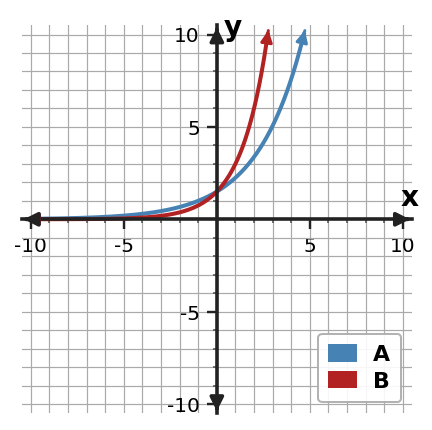
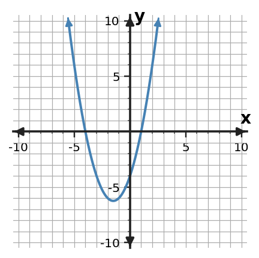

Algebra Practice 7.3 :::: Set 2
1. Make a small table of key points and sketch $y=8(\frac{4}{3})^x$. Label the $y$-intercept and horizontal asymptote.
2. Without graphing every point, identify the $y$-intercept of $f(x)=3(3)^x$ and explain how you know.
3. For the basic exponential function $y=3(\frac{5}{4})^x$, state the horizontal asymptote and describe whether the graph reaches it.
4. State the domain and range of $f(x)=3(2)^x$.
5. Use the graph to identify the $y$-intercept, describe the end behavior, and decide whether it shows exponential growth or decay.

6. A student graphs $y=8(0.5)^x$ approaching but not touching the x-axis as x increases. Decide whether it is reasonable, citing the intercept/asymptote behavior that matters.
7. Graphs A and B have the same positive initial value, but one uses factor 1.5 and the other uses factor 2. Which graph grows faster for positive $x$? Explain how the graph supports your answer.

8. Describe what happens to $f(x)=12(\frac{4}{3})^x$ as $x$ becomes very large and as $x$ becomes very negative.
9. A medication amount is modeled by $A(t)=80(0.75)^t$. Describe the graph’s initial value and long-term behavior in the context.
10. For $f(x)=5(\frac{4}{5})^x$, complete a key-point table for $x=-1,0,1,2$. Use the points to describe the graph as growth or decay.
11. Make a small table of key points and sketch $y=2(\frac{3}{2})^x$. Label the $y$-intercept and horizontal asymptote.
12. Without graphing every point, identify the $y$-intercept of $f(x)=5(\frac{1}{2})^x$ and explain how you know.
13. For the basic exponential function $y=5(\frac{5}{4})^x$, state the horizontal asymptote and describe whether the graph reaches it.
14. State the domain and range of $f(x)=8(\frac{3}{2})^x$.
15. Use the graph to identify the $y$-intercept, describe the end behavior, and decide whether it shows exponential growth or decay.

16. A student graphs $y=5(0.6)^x$ and draws the curve crossing the x-axis at $x=4$. Decide whether it is reasonable, citing the intercept/asymptote behavior that matters.
17. Graphs A and B start at the same positive value. Which graph will have the larger output at $x=3$? Use the factors shown by the graph family to justify your choice.

18. Describe what happens to $f(x)=6(\frac{3}{2})^x$ as $x$ becomes very large and as $x$ becomes very negative.
19. Solve $x^{2} + 6 x - 16=0$ by completing the square.
20. Rewrite $y=x^2+4x-3$ in vertex form by completing the square, then state the vertex.
21. Solve $(x-1)^2=4$ by using the square-root step that appears after completing the square.
22. For $f(x)=(x+3)(x-2)$, find the zeros and state the corresponding $x$-intercepts.
23. A monic quadratic has zeros $x=3$ and $x=6$. Write the function in factored form and identify its $x$-intercepts.
24. The graph crosses the $x$-axis at $x=-4$ and $x=1$. Write a possible monic quadratic in factored form and explain how the factors encode the intercepts.
